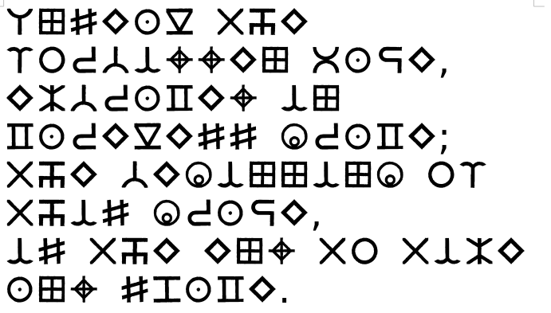

That was one crafty sage toying around with reflections. Regardless, the door that has just opened up leads to a grand hall that is home to a magnificent throne, and a chest sitting on it. You walk over to the chest and realize that the spell to unlock it is inscribed onto its surface.
